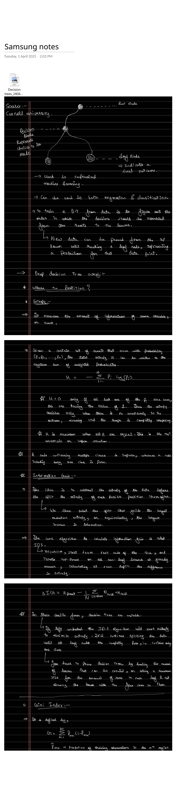

Decision Trees: Foundations
This series digitizes a set of handwritten notes on decision trees and ensemble methods, following the Cornell machine-learning lectures, and expands each idea with clean math and interactive animations. This first part covers what a decision tree is, why the same structure handles both classification and regression, how a prediction is made, how training chooses the order of decisions, and why unrestricted trees overfit.
What a Decision Tree Is
A decision tree is a model built from three kinds of nodes:
- The root node, where prediction starts.
- Decision (internal) nodes, each of which asks a yes/no question about one feature, for example "is feature $x_3 < 5$?". The answer chooses which child to descend into.
- Leaf nodes, each of which holds a final outcome: a class label for classification, or a number for regression.
It is a supervised model, trained on labelled examples, and it works for both classification and regression. The only thing that changes between the two is what sits in the leaves and how leaf quality is measured.

How a Prediction Works
Prediction is a walk. A new data point enters at the root and, at each decision node, the node's question routes it left or right. The point keeps descending until it reaches a leaf, and the leaf's stored outcome is the prediction for that point. There is no arithmetic over the whole tree at inference time, just a path of comparisons whose length is the depth of the tree. Step a query point through the tree below.
▶ Routing a Point from Root to Leaf
A query point with features $(x_1, x_2)$ enters at the root. Each decision node compares one feature against a threshold and sends the point to a child, until it lands in a leaf and reads off the class.
Training: Choosing the Order of Decisions
Training a decision tree means figuring out the order in which decisions should be assembled from the root down to the leaves. The tree is grown greedily and top-down: at each node the algorithm picks the single question that best separates the data reaching that node, splits the data into children, and recurses on each child. The recursion stops when a node is pure enough or some limit is hit, and that node becomes a leaf.
Two questions drive the whole construction, and the rest of this series answers them:
- Where should a node partition the data? This needs a numerical measure of how mixed a set of labels is, an impurity measure such as entropy or the Gini index (Part 2).
- When should growth stop? This is regularization: depth limits, minimum leaf sizes, or pruning (Part 4).
Why Deep Trees Overfit
Left unrestricted, a greedy tree keeps splitting until every leaf is perfectly pure, holding training points of a single class. A tree that deep memorizes the training set, including its noise, and generalizes poorly. In the language of the bias-variance tradeoff (Part 4), shallow trees have high bias and deep trees have high variance.
With the structure and the goal in place, Part 2 makes "where to split" precise by defining entropy, the Gini index, information gain, and the ID3 algorithm.